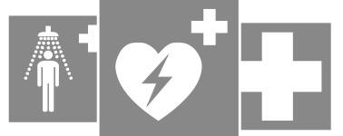

Situation — Accident en atelier

En atelier, un élève se coupe profondément la main. Une machine est encore en marche et du sang coule. Plusieurs camarades paniquent autour de lui.
Cours standard adapté : mêmes objectifs que le programme CAP, textes courts, questions guidées, indices, corrigés, explications concrètes et audio sur les blocs.
Lire dans l’ordre. Chaque document est suivi de ses questions. Les images aident à comprendre, mais le texte suffit pour répondre.
Utiliser les aides. Ouvrir l’indice pour démarrer, le corrigé pour vérifier, puis l’explication pour comprendre avec un exemple concret.
Traiter l’information : repérer une information utile dans un document.
Analyser une situation : comprendre le problème, les personnes concernées et les causes possibles.
Proposer une solution : choisir une action adaptée à une situation.

En atelier, un élève se coupe profondément la main. Une machine est encore en marche et du sang coule. Plusieurs camarades paniquent autour de lui.
1. À partir de la situation,
1.1C2Identifier le danger immédiat à supprimer ou éloigner.
Avant d’aider, chercher ce qui peut blesser encore.
La machine encore en marche est un danger immédiat.
Exemple : si la machine continue de tourner, une deuxième personne peut être blessée.
1.2C4Choisir la première action à faire.
La première action doit éviter qu’un autre accident se produise.
Il faut protéger la zone et éviter le suraccident.
Exemple : couper l’alimentation de la machine si c’est possible sans danger protège tout le groupe.
Alerter consiste à appeler les secours avec des informations précises : identité, numéro de téléphone, lieu exact, nature de l’accident, état de la victime, dangers persistants, gestes déjà réalisés.
Les numéros utiles sont notamment le 15 pour le SAMU, le 18 pour les pompiers, le 112 pour l’urgence européenne et le 114 par SMS pour les personnes sourdes ou malentendantes.
2. À partir du document 1,
2.1C1Relever quatre informations à donner aux secours.
Penser à ce que les secours doivent savoir pour venir et agir.
Lieu exact, nature de l’accident, état de la victime, numéro de téléphone, dangers persistants, gestes réalisés.
Exemple : “atelier bâtiment B, main coupée, saigne beaucoup, machine arrêtée” est utile pour organiser les secours.
2.2C1Associer les numéros d’urgence.
| Élément | Réponse |
|---|---|
| 15 | |
| 18 | |
| 112 | |
| 114 |
Associer chaque numéro à son service.
15 : SAMU. 18 : pompiers. 112 : urgence européenne. 114 : SMS urgence.
Exemple : le 112 fonctionne pour une urgence en Europe, mais il faut rester calme et donner le lieu précis.
Traiter l’information : repérer une information utile dans un document.
Mettre en relation : faire le lien entre une information du document et une connaissance du cours.
Proposer une solution : choisir une action adaptée à une situation.
Face à une hémorragie, il faut alerter et comprimer la plaie avec une protection si possible. Face à un étouffement complet, la personne ne peut plus parler, tousser ni respirer : il faut agir vite selon les gestes appris en formation.
Face à une brûlure thermique, refroidir la zone avec de l’eau tempérée peut limiter l’aggravation. Face à une plaie simple, il faut nettoyer, protéger et surveiller.
1. À partir du document 2,
1.1C3Associer la situation au geste prioritaire.
| Élément | Réponse |
|---|---|
| Hémorragie | |
| Brûlure thermique | |
| Plaie simple |
Chercher le verbe d’action associé à chaque situation.
Hémorragie : comprimer. Brûlure : refroidir. Plaie simple : nettoyer et protéger.
Exemple : une brûlure doit être refroidie rapidement pour limiter la profondeur de la lésion.
1.2C1Identifier les signes d’un étouffement complet.
Chercher ce que la personne ne peut plus faire.
Elle ne peut plus parler, tousser ni respirer.
Exemple : si une personne tousse efficacement, on l’encourage à tousser ; si elle ne respire plus, la situation est plus grave.
La position latérale de sécurité concerne une victime inconsciente qui respire. Elle permet de maintenir les voies respiratoires libres en attendant les secours.
Si la victime ne respire pas, il faut alerter, demander un DAE et commencer la réanimation selon la formation reçue.
2. À partir du document 3,
2.1C1Indiquer dans quel cas utiliser la PLS.
Chercher les deux informations : inconsciente et respire.
On utilise la PLS pour une victime inconsciente qui respire.
Exemple : si la personne répond et respire, on la surveille ; si elle est inconsciente mais respire, la PLS peut protéger ses voies respiratoires.
2.2C3Distinguer PLS et arrêt cardiaque.
| Victime inconsciente qui respire | Victime qui ne respire pas |
|---|---|
La respiration change la conduite à tenir.
Respire : PLS et alerte. Ne respire pas : alerte, DAE, réanimation selon formation.
Exemple : vérifier la respiration évite de choisir un geste inadapté.
Analyser une situation : comprendre le problème, les personnes concernées et les causes possibles.
Proposer une solution : choisir une action adaptée à une situation.
Argumenter : donner une idée et l’appuyer avec une raison.
En cas d’arrêt cardiaque, chaque minute compte. La chaîne de survie comprend : reconnaître l’urgence, alerter, commencer le massage cardiaque, utiliser un défibrillateur automatisé externe si disponible et suivre les consignes des secours.
Le DAE guide l’utilisateur par des messages vocaux. Il ne délivre un choc que si l’analyse le recommande.
1. À partir du document 4,
1.1C1Remettre les étapes de la chaîne de survie dans l’ordre.
Partir du constat puis appeler les secours.
Reconnaître l’urgence → alerter → masser → utiliser le DAE si disponible.
Exemple : appeler les secours rapidement permet d’être guidé pendant les gestes.
1.2C5Argumenter pourquoi il ne faut pas attendre pour alerter.
Penser au temps et aux secours.
Il ne faut pas attendre car chaque minute compte et les secours peuvent guider les gestes.
Exemple : pendant qu’une personne appelle, une autre peut aller chercher le DAE.
1.3C4Proposer une répartition des rôles à trois personnes.
Répartir protéger/alerter/chercher le DAE ou aider la victime.
Personne 1 protège et vérifie. Personne 2 appelle les secours. Personne 3 cherche le DAE ou guide les secours.
Exemple : répartir les rôles évite que tout le monde fasse la même chose pendant que personne n’appelle.